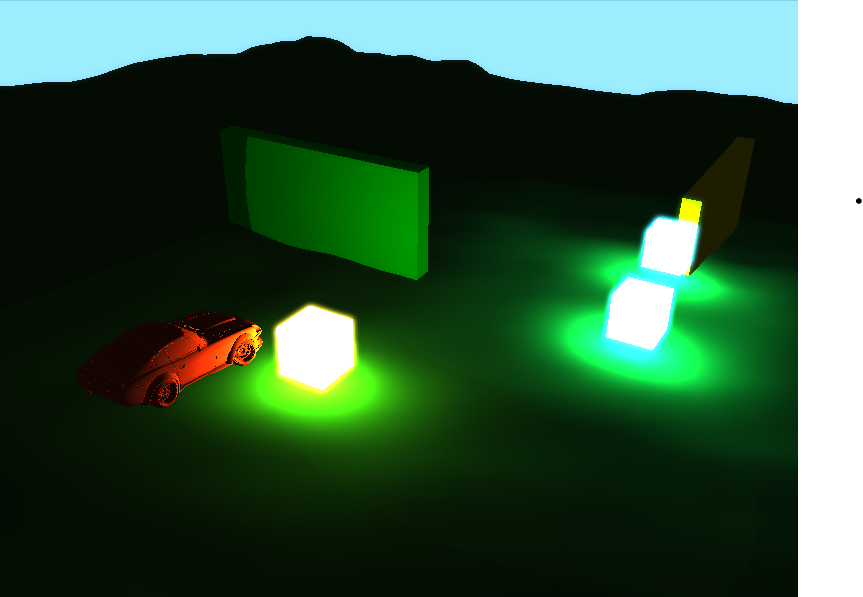
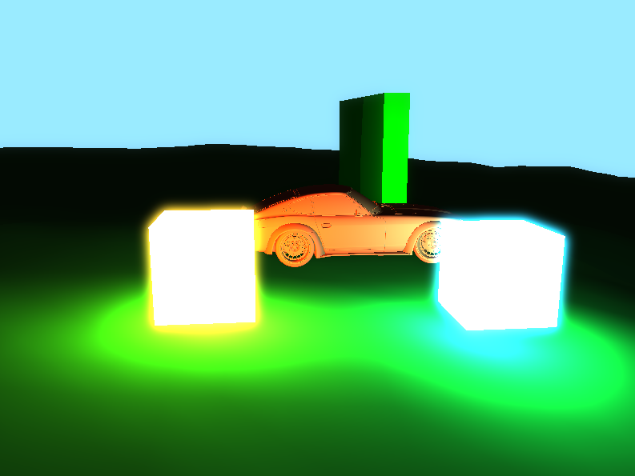

Modern C++ Game Engine




Project Overview
A professional-grade 3D game engine built entirely from scratch in modern C++. This engine showcases advanced graphics programming techniques, custom Entity-Component-System architecture, real-time procedural terrain generation, sophisticated physics simulation, and cutting-edge rendering capabilities including real-time Global Illumination, dynamic bloom effects, and advanced shadow mapping. Designed with scalability and performance in mind, it demonstrates deep understanding of computer graphics, physics simulation, memory management, and software architecture.
✨ Advanced Graphics & Lighting
The engine now features cutting-edge real-time graphics techniques that bring scenes to life with dynamic lighting, realistic shadows, and stunning visual effects.
Real-time Global Illumination
The voxel-based GI system calculates indirect lighting in real-time, creating natural color bleeding and soft ambient illumination that responds dynamically to scene changes.
- Voxel cone tracing for accurate indirect lighting
- Dynamic color bleeding between surfaces
- Real-time updates as objects move
- Configurable GI intensity and quality
GI Visualization
Color bleeding from red, green, blue, and yellow walls creates natural ambient lighting throughout the scene.
Without GI
Flat lighting with harsh shadows and no ambient color influence from surrounding surfaces.
With GI
Natural ambient lighting with color bleeding, soft shadows, and realistic light propagation.
Core Features
🏗️ Entity-Component-System Architecture
Custom-built ECS with type-safe component storage and efficient entity management.
// Flexible entity management
Entity cube = registry.CreateEntity();
registry.AddComponent(cube, TransformComponent{
{0.0f, 0.0f, -5.0f},
{0.0f, 0.0f, 0.0f},
{1.0f, 1.0f, 1.0f}
});
// Type-safe component queries
auto entities = registry.GetEntitiesWith<TransformComponent, MeshComponent>();
⚡ Advanced Physics System
Real-time physics simulation with gravity, collision detection, and object interactions.
// Physics component with mass and forces
registry.AddComponent(cube, PhysicsComponent(
true, // use gravity
1.0f // mass
));
// Collision detection system
void PhysicsSystem::HandleObjectCollisions(Registry& registry) {
// Sphere-sphere and box-box collision detection
// Mass-based collision resolution
// Realistic bounce and friction
}
// Terrain collision with height mapping
float terrainHeight = GetTerrainHeightAt(terrain, transform.position.x, transform.position.z);
🏔️ Procedural Terrain Generation
Real-time terrain generation with multi-octave noise, height mapping, and dynamic LOD.
// Dynamic terrain generation
TerrainComponent terrainComp(128, 128, 0.5f, 5.0f);
terrainSystem.GenerateTerrain(terrainComp);
// Real-time terrain modification
terrainSystem.RenderTerrain(registry, camera, width, height, lightPos, lightColor);
// Multi-octave noise for realistic hills
float height = GenerateHeight(x, z, terrain);
// Combines multiple frequencies for natural terrain
🎨 Advanced Material System
Comprehensive material system supporting multiple shader types including PBR, Phong, and wireframe rendering.
struct Material {
Shader* shader;
glm::vec3 color;
float roughness = 0.5f;
float metallic = 0.0f;
bool wireframe = false;
void Bind() const; // Automatic OpenGL state management
};
// Dynamic material switching
Material* pbrMaterial = new Material(
SHADER_MANAGER.GetShader(PBR),
glm::vec3(0.7f, 0.7f, 0.7f)
);
🌍 Real-time Global Illumination
Advanced voxel-based GI system with dynamic lighting, color bleeding, and real-time indirect illumination.
// Voxel-based GI implementation
class GlobalIllumination {
bool Initialize(int voxelResolution = 128);
void Update(glm::vec3 cameraPos);
void ApplyGI(Shader* shader, const glm::mat4& view, const glm::mat4& projection);
};
// Real-time GI updates
m_giSystem.Update(camera.Position);
m_giSystem.ApplyGI(shader, view, projection);
// Dynamic color bleeding from colored walls
Material* wallMaterial = new Material(shader, wallColors[i]);
wallMaterial->albedo = wallColors[i];
wallMaterial->roughness = 0.8f; // Rough surfaces for better GI diffusion
💫 Dynamic Bloom & Emissive Materials
HDR bloom pipeline with configurable intensity, threshold, and glowing material system.
// Emissive material system
Material* glowingCubeMaterial = new Material(SHADER_MANAGER.GetShader(PBR));
glowingCubeMaterial->SetEmissive(15.0f, glm::vec3(1.0f, 0.8f, 0.2f)); // High intensity glow
// Bloom pipeline configuration
renderer.SetBloomEnabled(true);
renderer.SetBloomIntensity(1.5f);
renderer.SetBloomThreshold(1.8f); // Lower threshold for more glow
renderer.SetBlurIterations(8);
renderer.SetBlurStrength(1.5f);
// Dual-output fragment shader for bloom
layout (location = 0) out vec4 FragColor; // Main scene
layout (location = 1) out vec4 BrightColor; // Emissive only
🌑 Advanced Shadow Mapping
High-resolution shadow mapping with bias correction, PCF filtering, and dynamic light sources.
// Shadow mapping system
bool InitializeShadowMapping() {
glGenFramebuffers(1, &m_shadowMapFBO);
glGenTextures(1, &m_shadowMapTexture);
// 2048x2048 shadow map resolution
}
// Shadow calculation with bias
float ShadowCalculation(vec4 fragPosLightSpace, vec3 normal, vec3 lightDir) {
float bias = max(0.05 * (1.0 - dot(normal, lightDir)), 0.005);
float shadow = currentDepth - bias > closestDepth ? 1.0 : 0.0;
return shadow;
}
// Real-time shadow updates
RenderShadowPass(registry, lightPos);
🔧 Multi-Shader Support
Centralized shader management with runtime switching between rendering techniques.
enum ShaderType { PHONG, PBR, WIREFRAME, FLAT, UNLIT };
class ShaderManager {
public:
static ShaderManager& GetInstance();
void LoadShaders();
Shader* GetShader(ShaderType type);
};
📁 Dynamic Asset Loading
Runtime model loading with support for multiple 3D formats and hot-reloading.
// Dynamic model loading system
unsigned int loadedVAO;
unsigned int loadedVertexCount;
if (ModelLoader::LoadOBJ("models/car.obj", loadedVAO, loadedVertexCount)) {
// Successfully loaded model
MeshComponent meshComp{loadedVAO, loadedVertexCount, material};
registry.AddComponent(entity, meshComp);
}
💡 Physically-Based Rendering
Advanced PBR implementation with realistic lighting calculations.
// PBR Cook-Torrance BRDF
float DistributionGGX(vec3 N, vec3 H, float roughness) {
float a = roughness * roughness;
float a2 = a * a;
float NdotH = max(dot(N, H), 0.0);
float denom = (NdotH * NdotH * (a2 - 1.0) + 1.0);
return a2 / (PI * denom * denom);
}
vec3 fresnelSchlick(float cosTheta, vec3 F0) {
return F0 + (1.0 - F0) * pow(1.0 - cosTheta, 5.0);
}
🎮 Real-time UI & Controls
Integrated Dear ImGui for real-time debugging and scene manipulation.
// Real-time performance monitoring
ImGui::Text("FPS: %.1f (%.2f ms/frame)", fps, frameTimeMs);
ImGui::Text("GPU Memory: %.2f KB", gpuMemoryUsage / 1024.0f);
// Interactive physics controls
ImGui::Checkbox("Use Gravity", &physics->useGravity);
ImGui::SliderFloat("Mass", &physics->mass, 0.1f, 10.0f);
ImGui::SliderFloat("Bounciness", &physics->restitution, 0.0f, 1.0f);
// Cube spawning system
if (ImGui::Button("Add New Cube")) {
Entity newCube = CreateCube(registry, randomPosition, material, VAO);
}
Technical Implementation
Advanced Physics System
// Complete physics simulation pipeline
void PhysicsSystem::Update(Registry& registry, float deltaTime) {
// Apply gravity and integrate motion
for (auto entity : entities) {
if (physics->useGravity && !physics->isGrounded) {
physics->velocity += gravity * deltaTime;
}
transform->position += physics->velocity * deltaTime;
}
// Handle object-to-object collisions
HandleObjectCollisions(registry, entities);
// Handle terrain collisions
HandleTerrainCollision(registry, entity, transform, physics, collider, terrain);
}
// Mass-based collision resolution
void PhysicsSystem::ResolveCollision(TransformComponent& transformA, PhysicsComponent& physicsA,
TransformComponent& transformB, PhysicsComponent& physicsB,
const glm::vec3& collisionNormal, float penetrationDepth) {
// Separate objects based on mass
float totalMass = physicsA.mass + physicsB.mass;
float ratioA = physicsB.mass / totalMass;
float ratioB = physicsA.mass / totalMass;
transformA.position -= collisionNormal * penetrationDepth * ratioA;
transformB.position += collisionNormal * penetrationDepth * ratioB;
// Apply realistic bounce and friction
glm::vec3 relativeVelocity = physicsB.velocity - physicsA.velocity;
float velocityAlongNormal = glm::dot(relativeVelocity, collisionNormal);
float restitution = std::min(physicsA.restitution, physicsB.restitution);
float impulseScalar = -(1.0f + restitution) * velocityAlongNormal;
impulseScalar /= physicsA.mass + physicsB.mass;
// Apply impulse to both objects
glm::vec3 impulse = collisionNormal * impulseScalar;
physicsA.velocity -= impulse * physicsB.mass;
physicsB.velocity += impulse * physicsA.mass;
}
Procedural Terrain System
// Advanced terrain generation with multi-octave noise
float TerrainSystem::GenerateHeight(int x, int z, const TerrainComponent& terrain) {
float total = 0.0f;
float frequency = 0.01f;
float amplitude = 1.0f;
float persistence = 0.5f;
// 6 octaves for detailed terrain
for (int i = 0; i < 6; ++i) {
float sampleX = x * frequency;
float sampleZ = z * frequency;
// Combined noise functions
float noise = std::sin(sampleX * 1.0f) * std::cos(sampleZ * 1.0f);
noise += 0.5f * std::sin(sampleX * 2.3f + sampleZ * 1.7f);
noise += 0.25f * std::sin(sampleX * 4.7f) * std::cos(sampleZ * 3.9f);
// Ridge formation for hills
float ridgeNoise = 1.0f - std::abs(std::sin(sampleX * 1.5f));
noise += 0.3f * ridgeNoise * ridgeNoise;
total += noise * amplitude;
amplitude *= persistence;
frequency *= 2.0f;
}
return total;
}
// Real-time terrain regeneration
void TerrainSystem::GenerateTerrain(TerrainComponent& terrain) {
std::vector vertices;
std::vector indices;
// Generate heightmap and mesh data
for (int z = 0; z < terrain.height; ++z) {
for (int x = 0; x < terrain.width; ++x) {
float height = GenerateHeight(x, z, terrain);
terrain.heightmap[z * terrain.width + x] = height;
// Build vertex data with positions, normals, UVs
}
}
SetupTerrainMesh(terrain, vertices, indices);
}
Global Illumination Implementation
// Voxel-based GI system
bool GlobalIllumination::Initialize(int voxelResolution) {
m_voxelResolution = voxelResolution;
// Create 3D texture for voxel data
glGenTextures(1, &m_voxelTexture3D);
glBindTexture(GL_TEXTURE_3D, m_voxelTexture3D);
// Allocate texture storage
glTexImage3D(GL_TEXTURE_3D, 0, GL_RGBA8,
m_voxelResolution, m_voxelResolution, m_voxelResolution,
0, GL_RGBA, GL_UNSIGNED_BYTE, nullptr);
// Create framebuffer for voxelization
glGenFramebuffers(1, &m_voxelizationFBO);
return true;
}
// Apply GI to shaders
void GlobalIllumination::ApplyGI(Shader* shader, const glm::mat4& view, const glm::mat4& projection) {
if (!m_enabled || !shader) return;
shader->use();
// Bind voxel texture
glActiveTexture(GL_TEXTURE5);
glBindTexture(GL_TEXTURE_3D, m_voxelTexture3D);
shader->setInt("voxelTexture", 5);
// Set GI parameters
shader->setFloat("giIntensity", m_giIntensity);
shader->setInt("voxelResolution", m_voxelResolution);
// Set camera position for cone tracing
glm::vec3 camPos = glm::vec3(glm::inverse(view)[3]);
shader->setVec3("cameraPos", camPos);
}
Bloom Pipeline Implementation
// Bloom system initialization
bool BloomSystem::Initialize(int screenWidth, int screenHeight) {
// Create HDR framebuffer
glGenFramebuffers(1, &m_hdrFBO);
glBindFramebuffer(GL_FRAMEBUFFER, m_hdrFBO);
// Create color buffers
glGenTextures(2, m_colorBuffers);
for (unsigned int i = 0; i < 2; i++) {
glBindTexture(GL_TEXTURE_2D, m_colorBuffers[i]);
glTexImage2D(GL_TEXTURE_2D, 0, GL_RGBA16F,
screenWidth, screenHeight, 0, GL_RGBA, GL_FLOAT, NULL);
glFramebufferTexture2D(GL_FRAMEBUFFER, GL_COLOR_ATTACHMENT0 + i,
GL_TEXTURE_2D, m_colorBuffers[i], 0);
}
// Create ping-pong framebuffers for blurring
glGenFramebuffers(2, m_pingpongFBO);
glGenTextures(2, m_pingpongColorbuffers);
for (unsigned int i = 0; i < 2; i++) {
glBindFramebuffer(GL_FRAMEBUFFER, m_pingpongFBO[i]);
glBindTexture(GL_TEXTURE_2D, m_pingpongColorbuffers[i]);
glTexImage2D(GL_TEXTURE_2D, 0, GL_RGBA16F,
screenWidth, screenHeight, 0, GL_RGBA, GL_FLOAT, NULL);
glFramebufferTexture2D(GL_FRAMEBUFFER, GL_COLOR_ATTACHMENT0,
GL_TEXTURE_2D, m_pingpongColorbuffers[i], 0);
}
return glCheckFramebufferStatus(GL_FRAMEBUFFER) == GL_FRAMEBUFFER_COMPLETE;
}
Memory Management & Performance
// Real-time memory tracking
static size_t gpuMemoryUsage = 0;
static size_t systemMemoryUsage = 0;
// Optimized rendering pipeline
auto entities = registry.GetEntitiesWith<TransformComponent, MeshComponent>();
for (auto entity : entities) {
auto transform = registry.GetComponent<TransformComponent>(entity);
auto mesh = registry.GetComponent<MeshComponent>(entity);
// Batch rendering with material system
mesh->material->Bind();
glDrawArrays(GL_TRIANGLES, 0, mesh->vertexCount);
}
Camera & Input System
class Camera {
glm::vec3 Position, Front, Up;
float Yaw, Pitch, MovementSpeed;
public:
void ProcessKeyboard(Camera_Movement direction, float deltaTime) {
float velocity = MovementSpeed * deltaTime;
if (direction == FORWARD) Position += Front * velocity;
if (direction == BACKWARD) Position -= Front * velocity;
// ... Additional movement handling
}
void ProcessMouseMovement(float xoffset, float yoffset, bool constrainPitch = true) {
xoffset *= MouseSensitivity;
yoffset *= MouseSensitivity;
Yaw += xoffset;
Pitch += yoffset;
// ... Euler angle updates
}
};
Explore the Code
Complete C++ game engine implementation available on GitHub, featuring advanced graphics programming including real-time Global Illumination, HDR bloom pipeline, dynamic shadow mapping, physics simulation, procedural terrain generation, and modern software architecture.